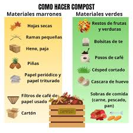
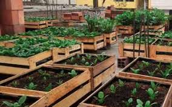
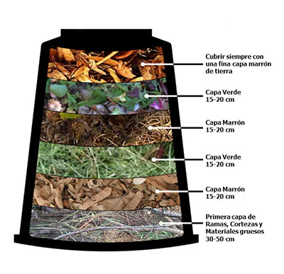
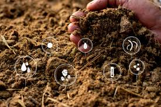
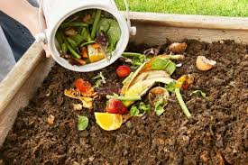
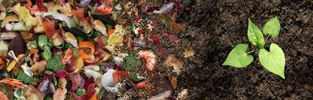

1. Materiales necesarios
Materiales orgánicos: Restos de frutas y verduras, hojas secas, ramas pequeñas, hierba cortada, restos de café y té, cáscaras de huevo trituradas.
Materiales a evitar: Carne, pescado, productos lácteos, plantas enfermas, aceites o comida procesada.
Otros materiales: Recipiente para composta, tierra o abono inicial (opcional), agua.
2. Preparar el lugar
- Elige un lugar ventilado y con sombra.
- Si es un recipiente cerrado, haz orificios para que entre aire.
- Si es directamente en el suelo, delimita con madera, ladrillos o malla metálica.
3. Cómo hacer la composta
- Paso 1: Base Coloca ramas o hojas secas en el fondo del recipiente.
- Paso 2: Agregar residuos Alterna capas de materiales verdes y marrones, 5-10 cm de grosor cada capa.
- Paso 3: Humedecer Mantén la mezcla húmeda como una esponja escurrida.
- Paso 4: Revolver Remueve cada 1-2 semanas para oxigenar y acelerar la descomposición.
4. Tiempo de descomposición
La composta tarda entre 2 y 6 meses. Estará lista cuando tenga color marrón oscuro, huela a tierra fresca y los restos originales no sean reconocibles.
5. Cómo usar la composta
- Mézclala con la tierra de macetas o jardín.
- Sirve como fertilizante natural para plantas ornamentales, huertos y árboles frutales.
- No usar directamente sobre plantas recién sembradas sin mezclar.
Consejos adicionales
- Mantener la composta húmeda pero sin encharcar.
- Si huele mal, agrega más materiales marrones y remueve.
- Pica restos grandes para que se descompongan más rápido.
- Usa varias compostas en distintos estados para tener siempre abono disponible.